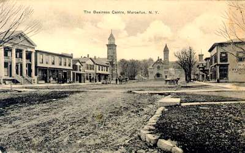
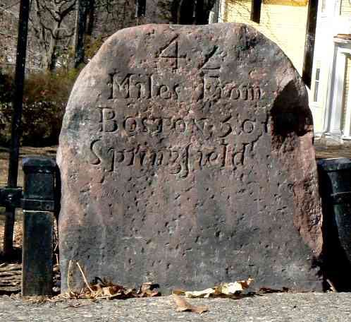

[[ Note du Traducteur : Thomas Stevens est le premier cycliste à avoir fait le tour du monde ; par la même occasion il est le premier cycliste à avoir traversé les Etats-Unis d'océan à océan ; les 4 premiers chapitres relatent sa traversée des Etats-Unis. ]]
Des Grandes Plaines Jusqu'à L'Atlantique
Je quitte Buffalo le lendemain matin et traverse Batavia [[ Ndt : village qui comptait environ 5000 habitants lors du passage de Stevens, fondé en 1802, par Joseph Ellicott, agent de la Holland Land Company ; cette organisation était constituée d'investisseurs originaires d'Amsterdam (Hollande) et ont choisi le nom Batavia en réference à la République Batave, laquelle englobait la majeure partie des territoires qui constituent les Pays-Bas actuels. Sources Wikipedia.org ]], où les cyclistes disposent pour leur club d'un petite pièce du meilleur goût. En plus d'être des compagnons jovials et pleins de coeur, ils ont un sens profondément artistique ; et le plus charmant bric-à-brac et petites japonaiseries décorent les murs et les tables.
Batavia vers 1900
Source : Erin Williamson Klein, My Family History Files
http://myfamilyhistoryfiles.com/buisch/52-ancestors-1-henry-george-buisch/
Après avoir passé la nuit à LeRoy [[ Ndt : village fondé en 1793, sous le nom de Town of Bellona (changé en 1813) ; environ 4500 habitants lors du passage de Stevens ]], en compagnie du président et du capitaine du Club de LeRoy, je me rends à Mumford le lendemain matin à l'écloserie de poissons de l'État, et je monte à travers la Vallée de Genesee qui est traversée par de belles routes, bien que parfois escarpées et pierreuses vers Canandaigua. Quand je me renseigne pour la meilleure route jusqu'à Geneva, on m'informe que la meilleure passe par le refuge pour sans-abri.
LeRoy vers 1860(?)
Trouvant ces indications plutôt confuses, et étant trop timide pour arrêter les gens et leur demander la route pour le refuge des sans-abri, comme de juste je me perds, et je suis en train d'errer au jugé vers l'est dans les ténèbres, quand je rencontre heureusement un conducteur dans une voiture à cheval, qui me conduit dans les parages à la ferme de sa mère, avec instructions à cette excellente dame de me recevoir pour la nuit. Le lendemain matin, à neuf heures, j'arrive à la belle Geneva, si joliment située sur le lac argenté de Seneca, après être passé en route par la ferme agricole de l'État ; en continuant le long du fleuve Seneca, en passant par Waterloo et les Chutes de Seneca je rejoins Cayuga, et de là Auburn et Skaneateles [[ Ndt : ville qui inclut un village du même nom, fondée en 1830. En 1843 une communauté utopiste, la Skaneateles Community, fondée par John Collins un activiste anti-esclavagiste s'installa et fonctionna jusqu'en 1846, où elle fut dissoute suite à des dissensions internes. Source : https://tsmcneal.wordpress.com. Plusieurs de ses bâtiments existent encore, dont l'ancien bâtiment commun maintenant un Bed and Breakfast. ]], où je pousse un soupir à la pensée de partir. Du dernier je ne peux pas dire qu'il est le plus beau, car tous ces lieux sont également beaux le long de cette belle chaîne de lacs qui transforme cette partie de l'État de New York en une vaste et délicieuse station estivale.
Geneva vers 1900
Skaneateles vers 1910
Source https://es.pinterest.com/pin/491596115545089633/
Ancien bâtiment de la Skaneateles Community
Cliquez l'image pour une vue de nos jours
« Une progression qui suit une romantique vallée suisse, où des dizaines de coins sylvestres et de ruisseaux ondulants invitent à la recherche des fées et des esprits », telle est l'expression la plus descriptive de mon itinéraire à partir de Marcellus le lendemain matin. Une fois de plus, en approchant de Camillus depuis la vallée étroite, j'entends le son des cloches du dimanche ; ces cloches d'église en contraste avec l'Ouest sauvage, il me semble étrangement que leurs notes m'ont accompagné au milieu des beaux paysages.
Marcellus, au début 20ème siècle. Fondé en 1794
Nommé (dixit Wikipedia) d'après Marcus Claudius Marcellus, célébre général romain.
Environ 2700 habitants lors du passage de Stevens.

Source https://www.villageofmarcellus.com
Arrivé à Camillus [[ Ndt : village fondé en 1799, nommé d'après Marcus Furius Camillus militaire et homme d'État romain, et dont le développement a été favorisé par le Canal Erie en 1825 el le chemin de fer en 1838 ; environ 2500 habitants lors du passage de Thomas Stevens ]], je demande le nom du petit ruisseau scintillant qui folâtre le long de cette vallée enchanteresse comme un enfant en train de jouer, absorbant les rayons du soleil et les reflétant coquettement sur les surfaces des vénérables chênes qui se courbent comme des gardiens aimants pour le protéger des fléaux. Mes oreilles s'attendent à entendre au moins un nom indien chantant tel que « Les Eaux Riantes » ; mais, comme un impitoyable lavage de printemps s'abattant sur un jeune rêve d'amour, tombe dans mes oreilles en expectative la dénomination prosaïque, « Ruisseau de Neuf Miles ».
J'avance sur de bonnes routes jusqu'à Syracuse, et de là mon itinéraire suit le canal d'Erie, roulant alternativement sur le chemin de halage du canal, les pistes de chariots et entre les voies du Chemin de Fer du New York Central. Sur le premier, le plus grand inconvénient au cyclisme paisible c'est le mulet de remorquage et son animosité injustifiée envers le bicycle, et les blasphèmes terribles et indicibles lancés en réaction par les bateliers. Parfois, la teneur de ces blasphèmes sulfureux m'est adressée, parfois à l'inoffensif bicycle, ou les deux à la fois, mais le plus souvent elle est dirigée vers l'horrible mulet, qui est vraiment le seul parti à blâmer. Un mulet intimide, non pas parce qu'il a vraiment peur, mais parce qu'il est irrésistiblement enclin à faire demi-tour, à provoquer des conflits entre ses ennemis, le batelier, le muletier et le cycliste, un intrus dans son domaine exclusif : le chemin de halage du Canal Erie. Un groupe de mulets feront semblant d'être effrayés, se retourneront brusquement, se libèreront d'un coup sec du muletier, et fileront à rebours sur le chemin de halage d'une manière indiquant que rien de moins qu'un mur de pierre ne les arrêterait ; mais, exactement au moment opportun où la corde de remorquage pourrait les tirer dans le canal, ils s'arrêtent. Faites confiance à un mulet pour ne jamais perdre la tête quand il s'enfuit, comme le ferait son parent impétueux, le cheval ; Il ne laisse jamais les circonstances du moment occuper ses pensées à un point préjudiciable à son instinct de conservation. La première mission dans la vie du mulet du Canal Erie est de provoquer les injures et les conflits entre bateliers et cyclistes, la seconde est de travailler et de mâcher du foin, et c'est ainsi qu'il prend sa revanche sur tout le monde.
A Rome, j'entre dans la fameuse et belle vallée des Mohawks [[ Mohawk Valley, tire son nom des Mohawks, une des six grandes nations iroquoises. Cette région se situe à l'entour de la Mohawk River ; la Mohawk Valley relie naturellement l'Océan Atlantique avec l'intérieur de l'Amérique du Nord. Il s'agit d'une région suburbaine, à la fois agricole et industrielle. Un site très complet sur l'histoire de la Mohawk Valley : https://goo.gl/nQCvuw ]], un endroit attendu avec anticipation depuis longtemps, d'avoir si souvent entendu parler de ses beautés naturelles et de son importance historique.
Mohawk Valley vers 1890
Source : https://www.loc.gov/photos/?q=mohawk%20valley
« C'est le jardin du monde ; les voyageurs qui sont allés en Europe et partout ailleurs, disent qu'il n'y a rien dans le monde qui égale la beauté paisible des paysages de la Vallée de Mohawk, » déclare avec enthousiasme un vieux gentleman à lunettes, que j'ai la chance de rencontrer sur les hauteurs à l'est de Herkimer. De la première assertion, je n'ai rien à dire, étant passé par une douzaine de « jardin du mond e» dans ce voyage à travers l'Amérique ; mais ce n'est pas contredire le fait que la vallée de Mohawk, vue de ce site avantageux, est merveilleusement belle. Je pense que c'est ici que le poète a éte inspiré pour composer la belle chanson qui est chantée dans les maisons tranquilles de cette même vallée et aussi dans les tentes du chasseur et du trappeur dans le lointain Yellowstone.
[[ Ndt : Thomas Stevens cite :
"Fair is the vale where the Mohawk gently glides,
On its clear, shining way to the sea."
Le texte original - que nous avons choisi de traduire - de cet extrait de chanson dit :
Sweet is the vale where the Mohawk gently glides,
On its clear, winding way to the sea. ]]
Douce est la vallée où la Mohawk coule gentiment, le long de son chemin limpide et sinueux, vers la mer.
[[ Ndt : chanson de 1858, paroles de G.W Elliott, musique de J.R Thomas. Titre : Bonny Eloise ; The Belle Of The Mohawk Vale. Source : https://goo.gl/krPfPE ]]
Air sur lequel était chantée cette chanson
Source : https://www.8notes.com/scores/3648.asp
La vallée est l'une des portes naturelles du commerce, car, à Little Falls où elle se resserre en un simple passage entre les collines on pourrait presque jeter une pierre à travers six voies ferrées, le canal Erie et la rivière Mohawk. Après avoir passé une heure à regarder le magnifique édifice du Capitole à Albany, je traverse l'Hudson et je me dirige vers l'est entre les deux voies du Chemin de Fer de Boston & Albany, où rouler à bicycle se révèle très agréable.
Le Capitole à Albany, en 1900
Du haut de la route, j'attarde longuement mon regard sur la vallée de l'Hudson, qui s'étire vers le sud comme un rêve céleste, et soupire à l'impossibilité de la parcourir les deux sens à la fois. « Il y a une amende de 50 $ pour rouler à bicycle le long du Chemin de Fer de B. & A. », m'informe-t-on à Albany, mais je prends le risque de poursuivre jusqu'à Schodack, où je me renseigne auprès d'un contremaître de section. « Non, y a pas d'amende ; mais si on vous roule d'ssus et z'êtes tué, s'ra peine perdue p'rvous d'engager des poursuites contre la compagnie pour un dédommagement, » telle est sa réponse rassurante ; les images préoccupantes d'amendes ruineuses se dissolvent dans un sourire à cette caractéristique explication milésienne [[ Ndt : dans la mythologie celtique irlandaise, les Milesians sont le peuple qui s'établit en Irlande ; allusion sans doute que le contremaître est d'origine irlandaise ]].
En traversant la frontière du Massachusetts dans le village de State Line [[ Ndt : State Line fait maintenant partie du village de West Stockbridge ]], je trouve des routes excellentes ; et, pensant que les grandes routes du « Vieil Etat de la Baie » [[ Ndt : le surnom de l'Etat du Massachusetts est The Bay State ; Massachusetts est le nom de la population indigène qui vivait dans cette région, de là le nom de la baie de Massachusetts, puis de la colonie anglaise qui s'y implanta, la Colonie de la Baie de Massachusetts au 17ème siècle, puis de l'État ]] seront partout en aussi bon état, je considère avec négligence les instructions minutieuses données par les cyclistes d'Albany, et, bientôt, je peine laborieusement sur les routes grossières et les pentes raides des monts Berkshire, m'efforçant de tirer quelque maigre consolation, en dépit de routes inroulables, du paysage charmant, et des nombreux traits intéressants de la région des monts Berkshire. C'est à Otis, au milieu de ces collines, que je fais connaissance pour la première fois avec le dialecte particulier de la Nouvelle-Angleterre dans sa patrie même.
La supériorité intellectuelle largement proclamée par les francs autochtones du Massachusetts s'affirme même dans les régions les plus reculées de ces collines sauvages ; car dans des petites fermes qui, dans la plupart des États, se caractérisent par des ménagères aux pieds nus et à face brune, je rencontre des dames à lunettes dont les visages reflètent le savoir encyclopédique qu'elles recèlent et dont les regards empreints de sagesse me remplissent naturellement d'admiration. À Westfield, j'apprends que Karl Kron, auteur et éditeur du roadbook américain « Dix mille miles à bicycle » – pour ne pas être dépassé par mon exploit d'avoir traversé la Humboldt (la rivière Humboldt) avec mon bicycle – a entrepris l'exploit périlleux de traverser à la nage le Potomac avec son bicycle suspendu à sa taille, et dut être repêché du fond avec une gaffe.
Depuis, cependant, j'ai rencontré le gentleman lui-même, qui m'assure que toute l'histoire est un canard [[ Ndt : une histoire absurde pour se moquer de la crédulité des auditeurs ]]. Je roule sur de bonnes routes jusqu'à Springfield d'où je poursuis jusqu'à Palmer ; de là je roule d'un trait la distance jusqu'à Worcester entre les voies du chemin de fer, de préférence aux routes dans un état variable de la région [[ Ndt : Worcester a été fondée en 1793 par un colon anglais ; jusqu'au 19ème c'était une ville d'industrie de fabrication textile, vêtements, chaussures, machines à tisser ; cétait également une ville avec une forte immigration européenne. Lors du passage de Stevens la ville compte plus de 58000 habitants ]].
Worcester en 1905
Le lendemain matin, en route vers Boston, à seulement quarante miles de là, je passe de vénérables bornes milométriques [[ Ndt : j'emploie le terme milométrique vu qu'aux USA les distances sont en miles ]] usées par le temps, mises en place dans les jours anciens de la colonie [[ Ndt : il s'agit des bornes en pierre qui ont été dressées au 18ème siècle entre Boston et Springfield ; plusieurs dizaines sont encore en place. Voir photo plus bas une de ces bornes, située à Worcester sur la route de Boston et donc devant laquelle il est vraisemblable que Thomas Stevens soit passé ! ]], lorsque le Grand-Ouest, maintenant couvert des traces des sabots en caoutchouc [[ Ndt : les pneus ]] du « populaire destrier d'aujourd'hui, » [[ Ndt : en anglais The Popular Steed of Today ; cette expression désigne le bicycle ; l'expression était utilisée par la marque de bicycles Columbia - la marque du bicycle de Thomas Stevens - dans ses publicités ; voir ci-dessous un encart publicitaire paru dans le journal Ann Arbor Courier du 08 février 1884, un quotidien de la ville de Ann Arbor dans le Michigan ]] était une contrée sauvage sans chemin, et sur les cartes un espace blanc.
Borne de distance
Cette borne se trouve à Worcester, sur la route de Boston

Source : https://en.wikipedia.org/wiki/1767_Milestones
Publicité des cycles Columbia
journal Ann Arbor Courier du 08 février 1884
Source https://goo.gl/avRM7U
J'atteins les fameuses routes « comme si lissées au papier de verre » de Framingham, qui, à propos, devraient être quelque peu poncées pour les rendre aussi bonnes pour le cyclisme que les tronçons de route de graviers près de Springfield, Sandwich et Piano, La Porte et South Bend, en Indiana ; Mentor, et Willoughby, en Ohio ; Girard, Pennsylvanie ; plusieurs endroits sur la route de crête entre Erie et Buffalo, et les plaines d'alcali des territoires des Montagnes Rocheuses. Bientôt le halo intellectuel et puritain qui plane au-dessus de « the Hub » [[ Ndt : pour rappel, the Hub est l'un des surnoms de Boston, ville de l'est des Etats-Unis, une des plus anciennes villes des Etats-Unis, centre économique et culturel, connue pour l'excellence de ses universités ; ce surnom vient d'une oeuvre de 1859 de Oliver Wendell-Holmes, The Autocrat of the Breakfast-Table, une de ses premières oeuvres célèbres, et où un personnage dit de Boston qu'elle est le centre de l'Univers (The Hub of the Universe ; expression qui a été abrégée en "The Hub"). The Autocrat of the Breakfast-Table sur le projet Gutenberg : https://goo.gl/WDs0QB ]] est en vue et, à deux heures de l'après-midi du 4 août [[ de l'année 1884 ]], je roule dans Boston et murmure aux vagues sauvages du bruyant Atlantique ce que les pauvres vagues du Pacifique disaient quand je suis parti de là-bas, il y a exactement cent trois jours et demi, ayant roulé environ 3,700 milles [[ 5955 kilomètres ]] pour délivrer le message.
En passant l'hiver de 1884-85 à New York, je me familiarisai avec la revue Outing, y contribuai à éditer des publications de mon voyage à travers l'Amérique et, au printemps de 1885, je poursuivis autour du monde en qualité de correspondant spécial ; j'embarquai le 9 avril de New York, pour Liverpool, à bord du City of Chicago [[ Ndt : le City of Chicago était un vapeur qui faisait la liaison New York - Liverpool ]].
Le vapeur City Of Chicago
Credit : Norway Heritage norwayheritage.com
Fin du chapitre 4
Page précédente - Page suivante (chapitre 5)
ADMINISTRATIVIA
Dernière mise à jour de cette page : 12 juin 2019
URL : https://orkic.github.io/bicygonzo/atwoab/chap4/trois.html
Contactez-nous : Contact
Website © Copyright - ef. Bicy Gonzo.